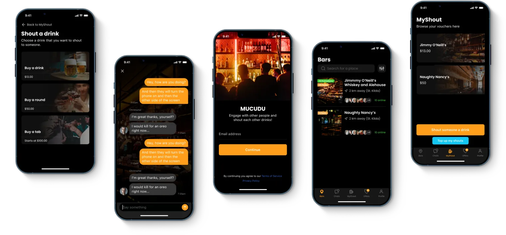
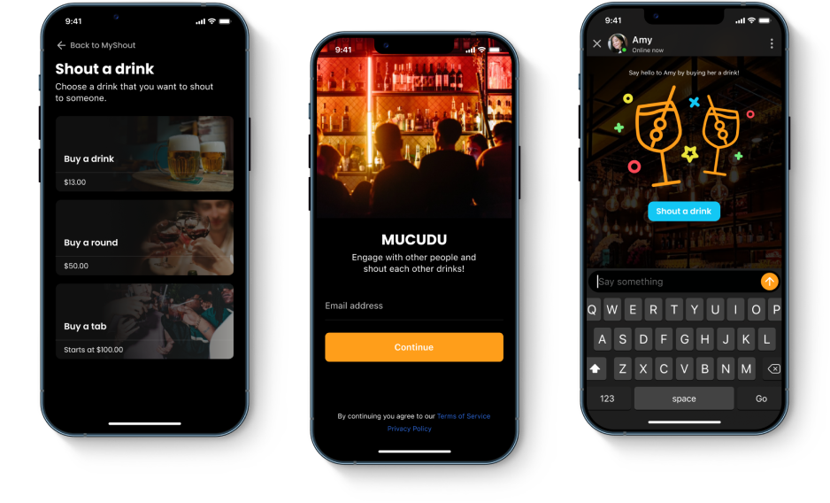
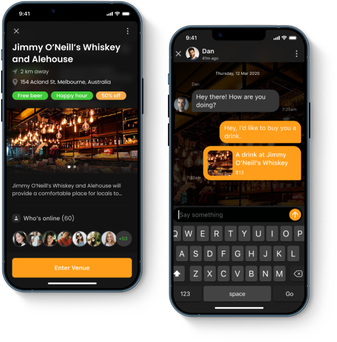
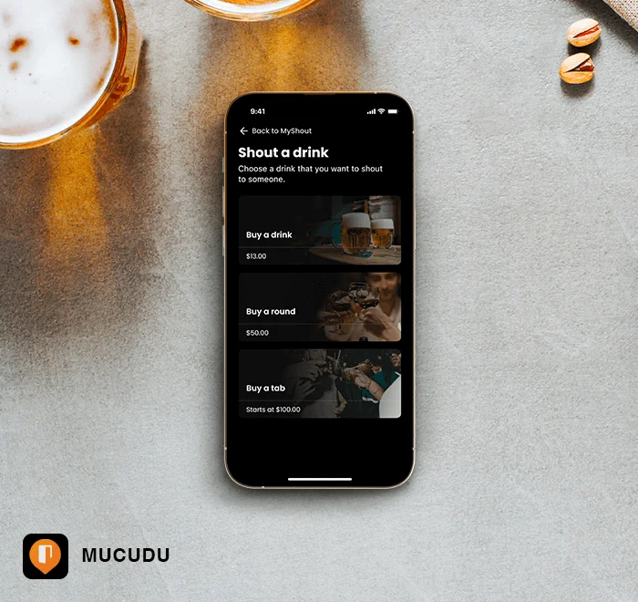

A social bar app that connects patrons and venues, so friends can share drinks and buy rounds.
Mucudu is a social bar app that brings people back together at their favourite venues. Patrons can connect with friends, share drinks and buy rounds for each other right from their phones, while venues and drink brands get a new way to reach customers. The idea came from two hospitality founders in Melbourne who saw how COVID lockdowns isolated people and hurt venues. After launch, the app grew to around 1,000 early adopters and partnered with major beverage brands, including LION.



